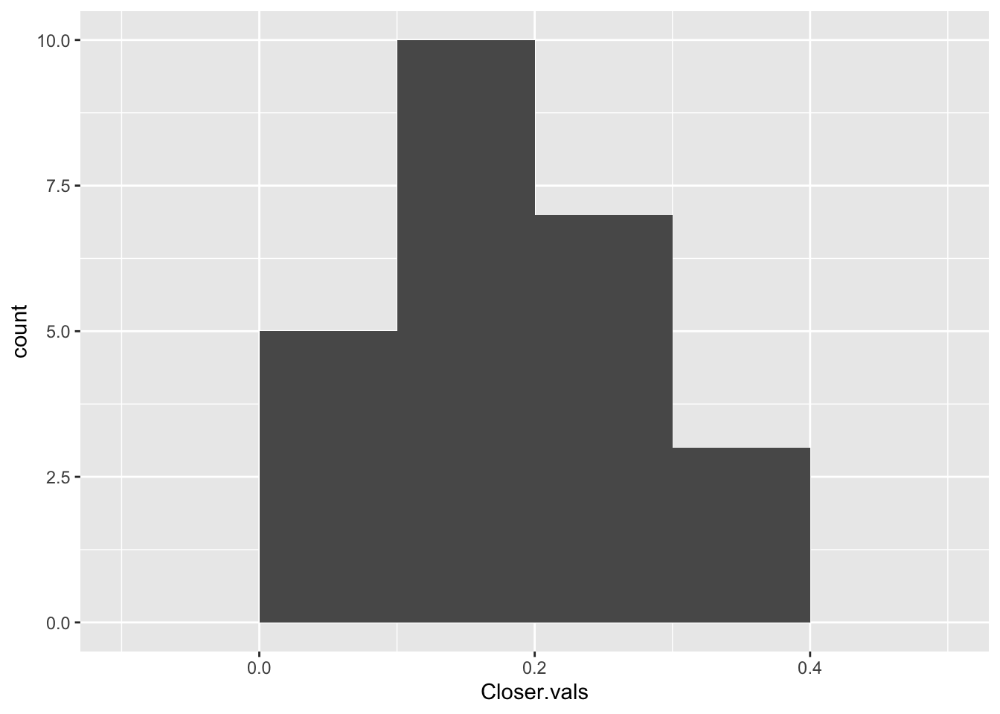
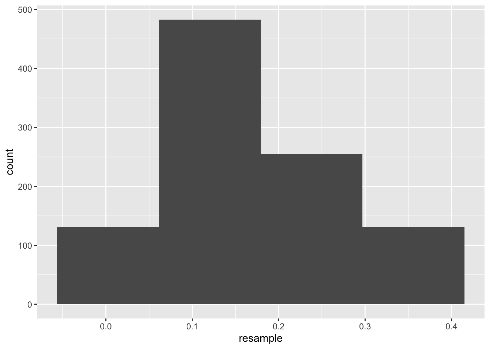
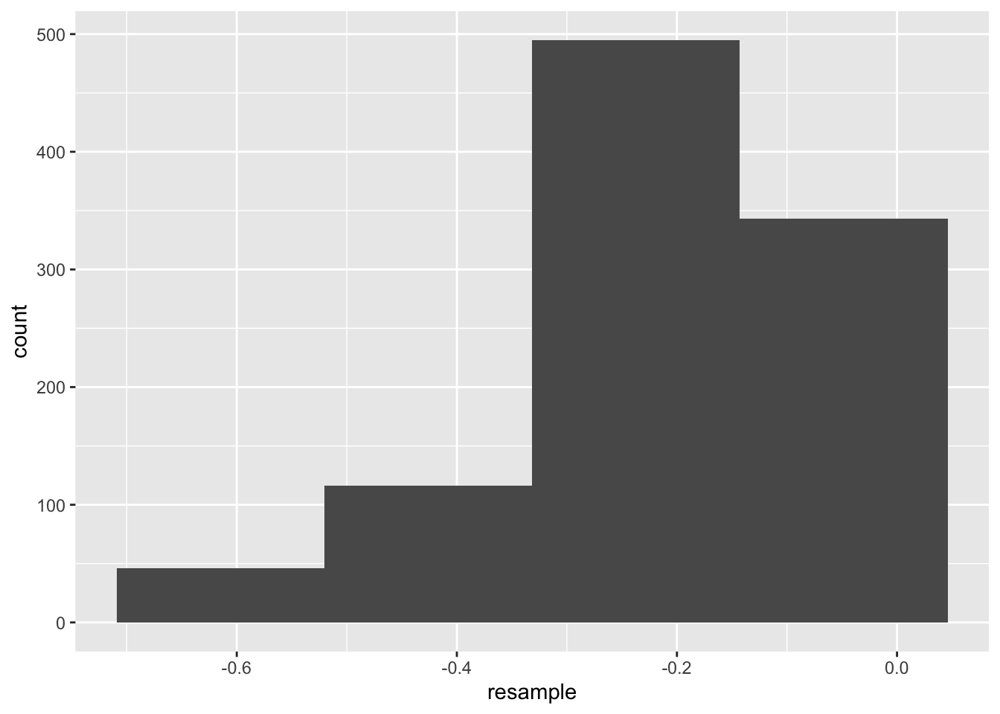
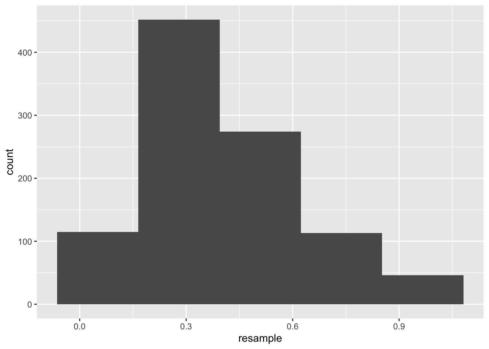
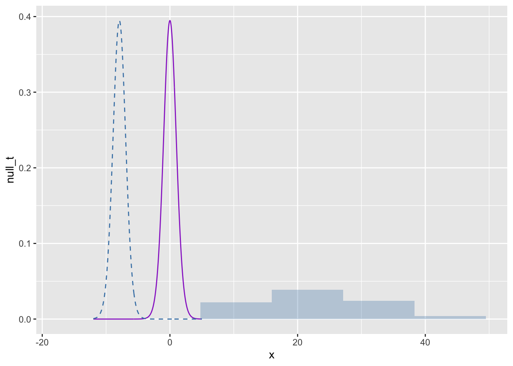
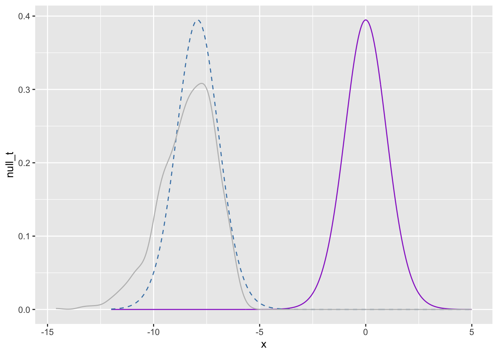
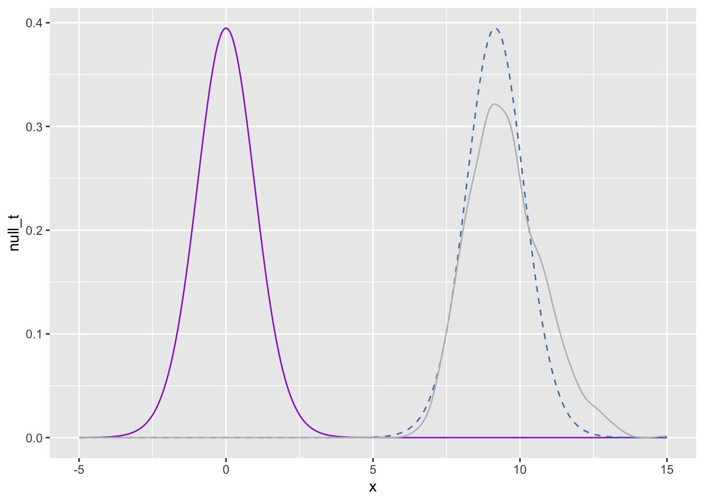
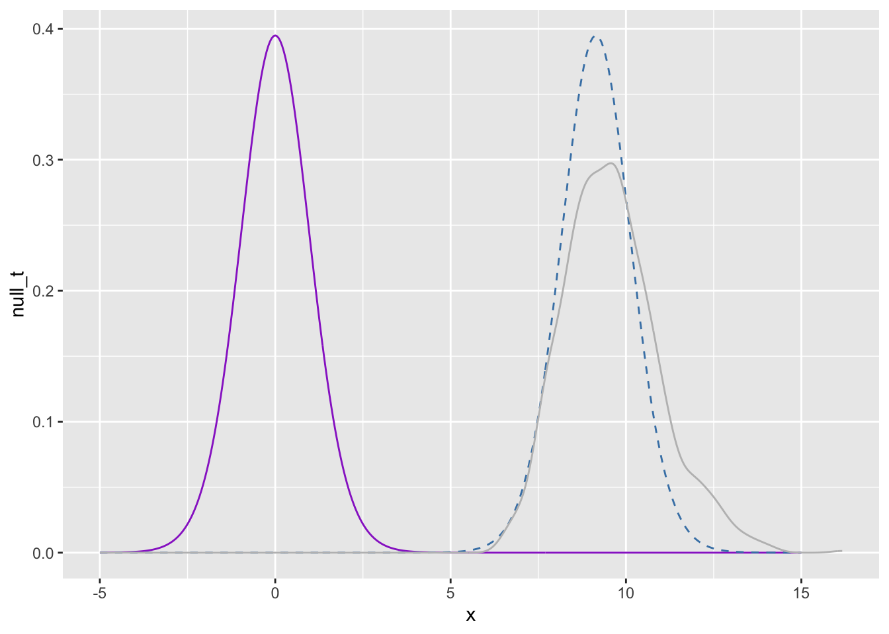

Code
One-sample t test power calculation
n = 20.58039
d = 0.65
sig.level = 0.05
power = 0.8
alternative = two.sidedBy 5p 4/27 Email me a link to your GitHub page with all polished labs rendered, and your review material (at least one unit). In the email, you should include a reflection about the processes involved in creating this portfolio and what you learned as a result. If you’re having trouble reflecting, consider Fink’s Taxonomy of Significant Learning (Google Fink taxonomy aligned self-reflection questions). In the email, let me know whether you would be comfortable sharing your page – I’m hoping that together we can get a good study guide for the final.
Kasdin et al. (2025) show that dopamine in the brains of young zebra finches acts as a learning signal, increasing when they sing closer to their adult song and decreasing when they sing further away, effectively guiding their vocal development through trial-and-error. This suggests that complex natural behaviors, like learning to sing, are shaped by dopamine-driven reinforcement learning, similar to how artificial intelligence learns. You can find the paper at this link: https://www.nature.com/articles/s41586-025-08729-1.
Note that the measurement is rather complicated. First, the measurements are taken on syllables of a bird song. When discussing bird songs, the term syllable refers to a single, distinct, uninterrupted sound that is part of a possibly complex bird song.
They initially describe their measurement as follows. They compare the sound of the developing zebra finches to the median sound of adult zebra finches, that act as a “goal” sound. They contextualize that measurement by computing a “relative quality” that takes into account their current ability (e.g., are they getting closer or further compared to their previous 14 renditions). They define the “closer” measurements as the 10% of syllable renditions with the highest relative quality and the “further” as the lowest 10%.Note that the data are measures of dopamine change, they use fibre photometry, changes in the fluorescence indicate dopamine changes in realtime. Their specific measurement considers the percent change in flourescence in 100-ms windows between 200 and 300 ms from the start of singing, averaged across development.
Finally, the researchers note that they adjust the observations to correct for the increased dopamine for singing at all (whether it is close or far).So, the random variables we are working with are: \[\begin{align*} X_{\text{close}} &= \text{average \% change in fluorescence for the top 10\% syllable renditions} \\ &\quad \text{relative to distance from adult sound (corrected for singing)} \\[1ex] X_{\text{far}} &= \text{average \% change in fluorescence for the bottom 10\% syllable renditions} \\ &\quad \text{relative to distance from adult sound (corrected for singing)} \end{align*}\]
That is, the unit of measure is the syllable as measured on six birds, and the measurement is somewhat complicated.
Using the pwr package for (Champely 2020), conduct a power analysis. How many observations would the researchers need to detect a moderate-to-large effect (\(d=0.65\)) when using \(\alpha=0.05\) and default power (0.80) for a two-sided one sample \(t\) test.
Solution
One-sample t test power calculation
n = 20.58039
d = 0.65
sig.level = 0.05
power = 0.8
alternative = two.sidedThe researchers should have at least 21 observations.
Click the link to go to the paper. Find the source data for Figure 2. Download the Excel file. Describe what you needed to do to collect the data for Figure 2(g). Note that you only need the closer_vals and further_vals. Ensure to mutate() the data to get a difference (e.g., closer_vals - further_vals).
Solution
To get the data for Figure 2(g), I downloaded the source data into an unweildly and very large Excel file. Only a small subset of these data were needed. I copied the closer.vals data to the further.vals sheet, and then exported that sheet to this lab in my Mac files. Now, I have the data locally and it will be easy to keep track of in the future.
Summarize the data.
Solution

| Mean | Median | Standard Deviation | Variance |
|---|---|---|---|
| -0.2128063 | -0.1880146 | 0.1342712 | 0.0180287 |
We have preliminary evidence that supports the conjecture that dopamine in the brains of young zebra finches decreases when they sing further away from their adult song- our mean and median are below zero, and our standard deviation is less than the distance from zero of both the mean and median. The variance is very small. The histogram shows an approximately left-skewed distribution, with some values near zero.

| Mean | Median | Standard Deviation | Variance |
|---|---|---|---|
| 0.1786241 | 0.1436642 | 0.0975315 | 0.0095124 |
We have preliminary evidence that supports the conjecture that dopamine in the brains of young zebra finches increases when they sing closer to their adult song- our mean and median are above zero, and our standard deviation is less than the distance from zero of both the mean and median. The variance is very small. The histogram show some values near zero, with an approximately symmetric distrivution.

| Mean | Median | Standard Deviation | Variance |
|---|---|---|---|
| 0.3914303 | 0.3533044 | 0.2140658 | 0.0458241 |
We have preliminary evidence that supports the conjecture that there is a difference between dopamine in the brains of young zebra finches when they sing further away compared to closer to their adult song- our mean and median are above zero, and our standard deviation is less than the distance from zero of both the mean and median. The variance is very small. The histogram shows an approximately uniform distribution, with one slight outlier.
Conduct the inferences they do in the paper. Make sure to report the results a little more comprehensively – that is your parenthetical should look something like: (\(t=23.99\), \(p<0.0001\); \(g=1.34\); 95% CI: 4.43, 4.60). Ensure to verify any conditions for use.
Note: Your numbers will vary slightly because they reported two-sided test \(p\)-values instead of the specified one-sided tests.
Solution
For the closer values: we have a sample size of 25 and our data are approximately left-skewed. We really don’t fit the conditions for use, but we are close and it will be good practice, so we will proceed!
One Sample t-test
data: dat.kasdin$Closer.vals
t = 9.1573, df = 24, p-value = 1.333e-09
alternative hypothesis: true mean is greater than 0
95 percent confidence interval:
0.1452511 Inf
sample estimates:
mean of x
0.1786241 Hedges' g | 95% CI
-----------------------
1.77 | [1.24, Inf]
- One-sided CIs: upper bound fixed at [Inf].
One Sample t-test
data: dat.kasdin$Closer.vals
t = 9.1573, df = 24, p-value = 2.665e-09
alternative hypothesis: true mean is not equal to 0
95 percent confidence interval:
0.1383650 0.2188831
sample estimates:
mean of x
0.1786241 We do have statistically discernible support for the hypothesis that dopamine in the brains of young zebra finches increases when they sing closer to their adult song (\(t=9.16, p<0.05, g=1.77, 95 \% \hspace{0.15cm} CI : (0.139,0.22)\)).
Now, let’s check if we can still apply the central limit theorem, or if the data are too skewed. We will check using resampling!

Our data are still skewed. The researchers really should not have done a t-test here, as the conditions for use are not met.
For the further values: we have a sample size of 25 and our data are approximately symmetric. We have somewhat unsure footing, but we will proceed anyway!
One Sample t-test
data: dat.kasdin$Farther.vals
t = -7.9245, df = 24, p-value = 1.866e-08
alternative hypothesis: true mean is less than 0
95 percent confidence interval:
-Inf -0.1668619
sample estimates:
mean of x
-0.2128063 Hedges' g | 95% CI
-------------------------
-1.53 | [-Inf, -1.04]
- One-sided CIs: lower bound fixed at [-Inf].
One Sample t-test
data: dat.kasdin$Farther.vals
t = -7.9245, df = 24, p-value = 3.731e-08
alternative hypothesis: true mean is not equal to 0
95 percent confidence interval:
-0.2682307 -0.1573819
sample estimates:
mean of x
-0.2128063 We do have statistically discernible support for the hypothesis that dopamine in the brains of young zebra finches decreases when they sing further away from their adult song (\(t=-7.92, p<0.05, g=-1.53, 95 \% \hspace{0.15cm} CI : (-0.27,-0.16)\)).
Now, let’s check if we can still apply the central limit theorem, or if the data are too skewed. We will check using resampling!

Our data are still very skewed. The researchers really should not have done a t-test here, as the conditions for use are not met.
For the differences: we have a sample size of 25 and our data are approximately symmetric. We have somewhat unsure footing, but we will proceed anyway!
One Sample t-test
data: dat.kasdin$Difference
t = 9.1428, df = 24, p-value = 2.746e-09
alternative hypothesis: true mean is not equal to 0
95 percent confidence interval:
0.3030683 0.4797923
sample estimates:
mean of x
0.3914303 Hedges' g | 95% CI
------------------------
1.77 | [1.14, 2.39]We do have statistically discernible support for the hypothesis that there is a difference between dopamine in the brains of young zebra finches when they sing further away compared to closer to their adult song (\(t=9.14, p<0.05, g=1.77, 95 \% \hspace{0.15cm} CI : (0.303,0.480)\)).
Now, let’s check if we can still apply the central limit theorem, or if the data are too skewed. We will check using resampling!

Our data actually look skewed here as well. So even in this scenario, the researcher should not have done a t-test!
For each hypothesis test in the previous question, plot the null \(T\) distribution and the observed \(t\) statistic. Ensure to use to highlight the rejection region and the \(p\)-value. Additionally, add the resampling distribution for \(T\) to the chart to demonstrate any differences between the null distribution and the distribution suggested by the data.
Solution
For the farther values:
# Let's center our t-distribution around our observed t-statistic:
t_obs <- t.test(dat.kasdin$Farther.vals, alternative = "less", mu = 0)$statistic
x <- seq(-12, 5, by = 0.05)
null_t <- dt(x, df = 24)
shifted_t <- dt(x - t_obs, df = 24) # centered at observed t
plot.data <- data.frame(x, null_t, shifted_t)
resample_t <- (resample - mean(dat.kasdin$Farther.vals)) /
(sd(dat.kasdin$Farther.vals) / sqrt(nrow(dat.kasdin)))
ggplot(plot.data, aes(x = x)) +
geom_line(aes(y = null_t), color = "darkorchid") +
geom_line(aes(y = shifted_t), color = "steelblue", linetype = "dashed") +
geom_histogram(data = data.frame(resample_t),
aes(x = resample_t, y = after_stat(density)),
inherit.aes = FALSE, bins = 6,
fill = "steelblue", alpha = 0.3)
Here, we see the null t-distribution, the t-distribution shifted to be centered at our observed t-statistic, and the histogram of our resampling distribution standardized to be on the t-scale. I realize that I may have interpreted the earlier instructions for resampling wrong, and maybe it was suppoed to be bootstrapping, but I had guidance from Professor Cipolli during lab that suggested that this was correct. This histogram-scaling approach might be the correct answer, but it also isn’t something I’ve seen before. I am including it here because I am not sure exactly why it would be incorrect (if it is incorrect), and I look forward to getting feedback!
Also, the graph with bootstrapping:
# Let's center our t-distribution around our observed t-statistic:
t_obs <- t.test(dat.kasdin$Farther.vals, alternative = "less", mu = 0)$statistic
x <- seq(-12, 5, by = 0.05)
null_t <- dt(x, df = 24)
shifted_t <- dt(x - t_obs, df = 24) # centered at observed t
plot.data <- data.frame(x, null_t, shifted_t)
boot_t_far <- replicate(1000, {
s <- sample(dat.kasdin$Farther.vals, size = nrow(dat.kasdin), replace = TRUE)
(mean(s) - 0) / (sd(s) / sqrt(nrow(dat.kasdin)))
})
ggplot(plot.data, aes(x = x)) +
geom_line(aes(y = null_t), color = "darkorchid") +
geom_line(aes(y = shifted_t), color = "steelblue", linetype = "dashed") +
geom_density(data = data.frame(boot_t_far),
aes(x = boot_t_far),
inherit.aes = FALSE,
color = "gray", alpha = 0.3)
With both visualizations, the t-distribution actually appears to be an okay fit for the data. The data are a little more left-skewed, but it’s not horrible.
For the closer values:
# Let's center our t-distribution around our observed t-statistic:
t_obs <- t.test(dat.kasdin$Closer.vals, alternative = "greater", mu = 0)$statistic
x <- seq(-5, 15, by = 0.05)
null_t <- dt(x, df = 24)
shifted_t <- dt(x - t_obs, df = 24)
plot.data <- data.frame(x, null_t, shifted_t)
boot_t_close <- replicate(1000, {
s <- sample(dat.kasdin$Closer.vals, size = nrow(dat.kasdin), replace = TRUE)
(mean(s) - 0) / (sd(s) / sqrt(nrow(dat.kasdin)))
})
ggplot(plot.data, aes(x = x)) +
geom_line(aes(y = null_t), color = "darkorchid") +
geom_line(aes(y = shifted_t), color = "steelblue", linetype = "dashed") +
geom_density(data = data.frame(boot_t_close),
aes(x = boot_t_close),
inherit.aes = FALSE,
color = "gray", alpha = 0.3)
Again, for the closer values, the t-distribution actually appears to be an okay fit for the data. The data are a little more right-skewed, but it’s not horrible.
For the differences:
# Let's center our t-distribution around our observed t-statistic:
t_obs <- t.test(dat.kasdin$Difference, alternative = "two.sided", mu = 0)$statistic
x <- seq(-5, 15, by = 0.05)
null_t <- dt(x, df = 24)
shifted_t <- dt(x - t_obs, df = 24)
plot.data <- data.frame(x, null_t, shifted_t)
boot_t_diff <- replicate(1000, {
s <- sample(dat.kasdin$Difference, size = nrow(dat.kasdin), replace = TRUE)
(mean(s) - 0) / (sd(s) / sqrt(nrow(dat.kasdin)))
})
ggplot(plot.data, aes(x = x)) +
geom_line(aes(y = null_t), color = "darkorchid") +
geom_line(aes(y = shifted_t), color = "steelblue", linetype = "dashed") +
geom_density(data = data.frame(boot_t_diff),
aes(x = boot_t_diff),
inherit.aes = FALSE,
color = "gray", alpha = 0.3)
Again, for the differences, the t-distribution actually appears to be an okay fit for the data. The data are a little more right-skewed, but it’s not horrible.